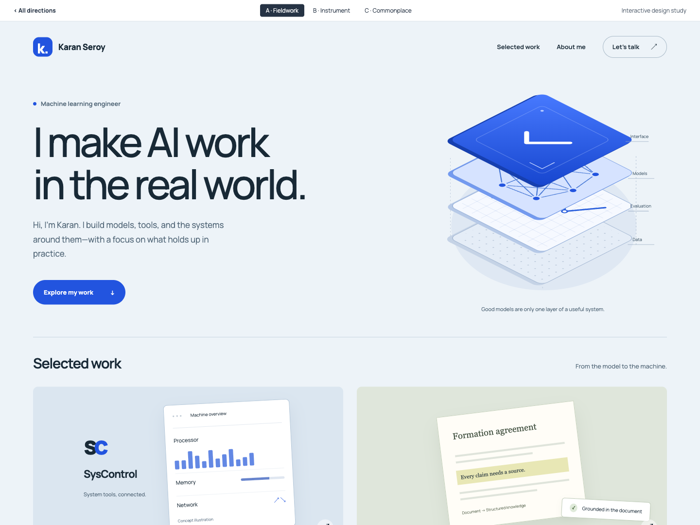
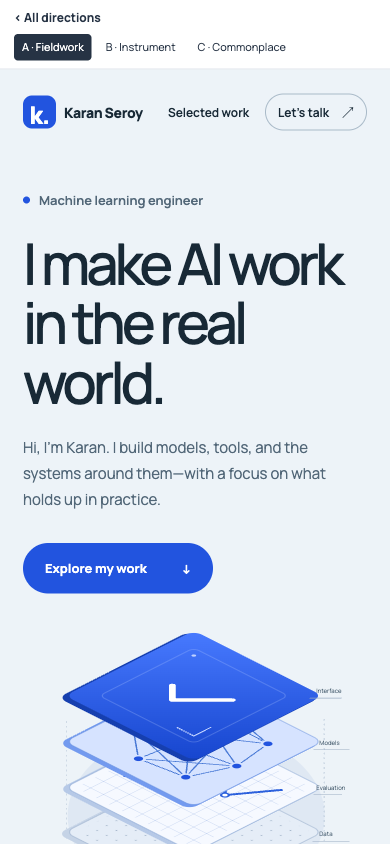
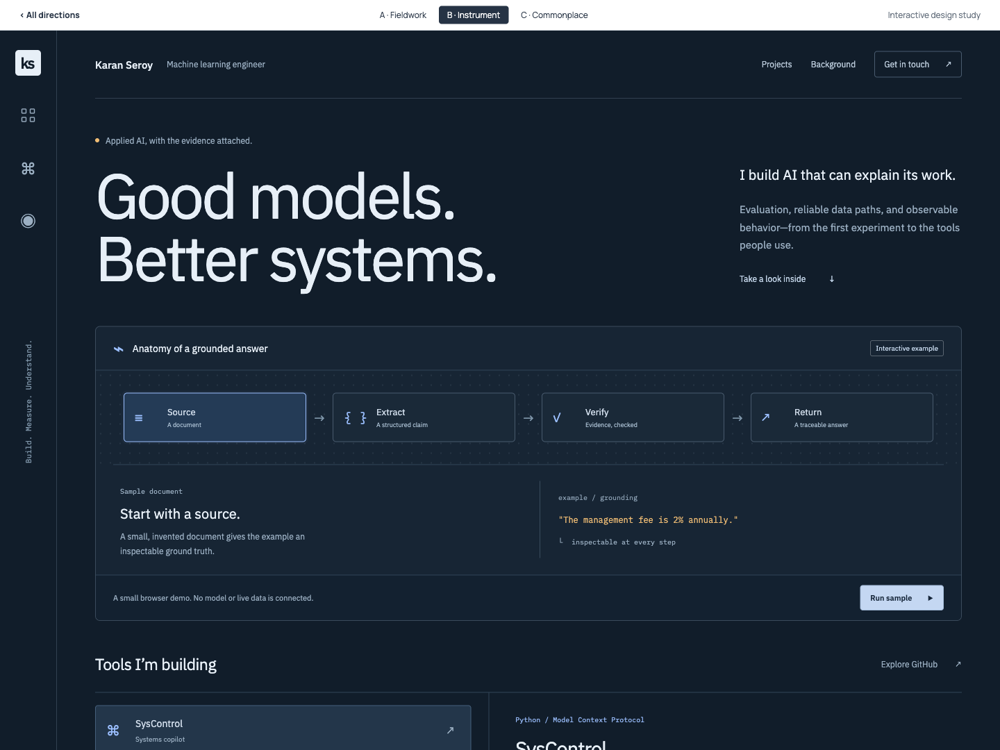
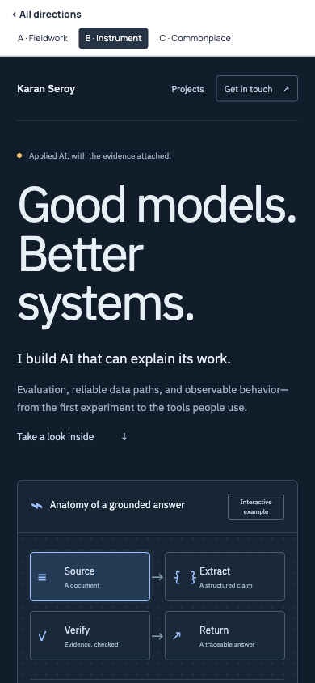
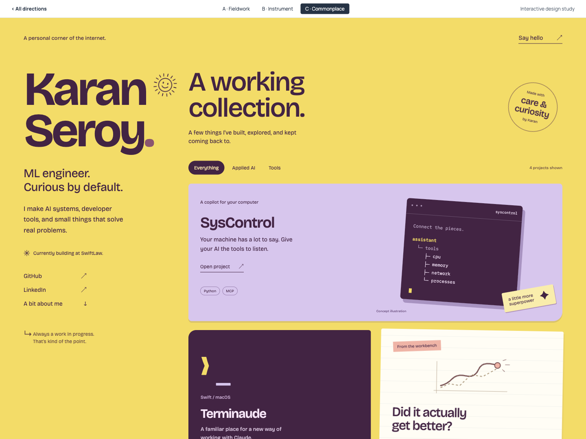
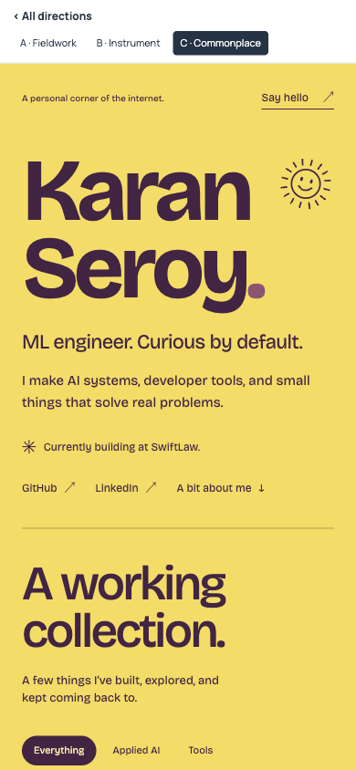

A
Fieldwork


Clear. Composed. Work comes first.
A spacious introduction, a distinctive systems illustration, and enough room for each project to tell a story.
Manrope
Open interactive mockup Try opening a project.Latest study: terminal portfolio ↗
The same engineer, projects, and principles.
Three different ways to bring them into focus.
Explore each, then choose what feels like you.


Clear. Composed. Work comes first.
A spacious introduction, a distinctive systems illustration, and enough room for each project to tell a story.


Technical. Precise. Hands-on.
A working lab that makes your approach tangible. Visitors can inspect a pipeline and explore the tools you build.


Personal. Expressive. A little playful.
A colorful collection of projects and ideas. Your personality is as visible as the things you make.
Showing desktop previews
The first-round proposals below were rejected. The latest study uses monospace output, a file tree, project READMEs, and a working portfolio command prompt.
| Direction | What it leads with | Best fit | The tradeoff |
|---|---|---|---|
| A · Fieldwork | Your work and its purpose | A versatile professional portfolio | Needs strong project stories as it grows |
| B · Instrument | Your process and technical depth | Engineering peers and technical teams | Denser; more interaction to maintain |
| C · Commonplace | Your personality and range | A memorable independent identity | More expressive than a conventional résumé site |
Pick a letter, borrow elements across directions, or tell me what to push further. These are responsive, editable prototypes built around your existing content.